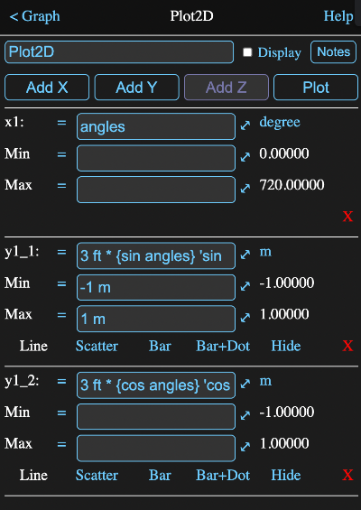
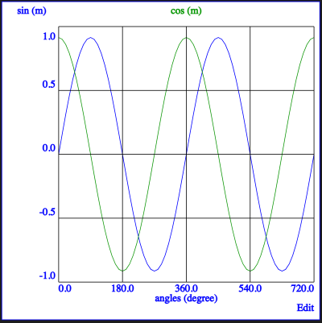
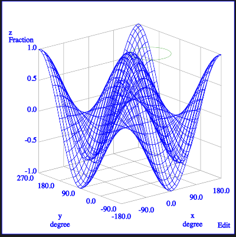

This object displays the relationship between arrays of numbers. It can either be a two dimensional X,Y graph or three dimensional X, Y, Z graph.
The values to be plotted are defined by providing a formula for each axis. The formula should represent an array of values for points to be plotted against that axis.
Thus in the simplest case, if the formula for the X axis has 100 values, the formula for the corresponding Y axis should also have 100 values and together they would represent the 100 coordinate pairs of the points to be plotted.
When a new graph is created or a graph icon on the diagram is tapped, the information view described below will be presented. However if the graph inputs are already defined, the plot will be immediately displayed. Tap the edit button at the upper right if you wish to modify the inputs.
Graphs that don't have a Z axis will be represented as a standard flat x-y plot. X sections of 2D points can have more than one Y axis, with each set of Y values being plotted against the common X values as a separate line.
Adding a Z axis will change the representation so that the points are displayed inside a rotatable cube with the X and Y axes on the floor of the cube and the Z axis on the vertical.
You cannot mix X sections that are 2D and 3D and each section of a 3D plot will have exactly one X, Y and Z value.
Once a Z axis has been added, you will not be able to add additional Y axes and adding another X will automatically include a Z axis.
Similarly, if there is more than one Y row, the Add Z button will be disabled.
The X and Y arrays of a 2D plot should contain the same number of elements. If there is more than one Y axis, then each axis will be plotted in a different colour and can have different axis ranges and units.
If you have more than one X section, the number of elements in the different sections can be different.
The X and Y arrays should normally be column arrays, but you can have matrices, in which case each matching column will be plotted as a separate line. The X and Y matrices should have the same size.
The X, Y and Z arrays of a 3D plot should contain the same number of elements for a line plot.
However a surface plot will be presented if Z is a matrix with a number of rows equal to number of values in X and a number of columns equal to the number of values in Y. In this case X and Y do not have to have the same number of elements. The resulting plot will be a mesh where the Z values for each X, Y combination are plotted.
If you have more than one X section, the number of elements in the different sections can be different and mesh and line plots can be plotted together.
Finally, if X, Y and Z are all matrices with the same number of columns, each column is now plotted as a separate line
The information view will appear when you first create a new graph tool. It allows you to define the data which will be plotted, in the form of arrays for the X, Y and, if applicable, Z values.
If you tap on an icon for a graph and the graph has sufficient information to render a plot, then the plot will appear instead of the information view.
Tap on the Edit button in the upper right of the plot to see to the information view.
The image below is the information view for a 2D plot where two different Y lines are plotted against the same X values (defined in the expression angles as 0:72 * 10 degree). The y lines are just the sine and cosine of those X values.
Below the buttons is a table of axis definitions. This will have at least one X and one Y definition.
Each definition has formula fields for the axis formula and for the minimum and maximum values to use for that axis on a plot, and tappable fields for the display unit, deleting the axis and in some cases for the line type.
This formula should resolve to the array of values for the axis.
On the plot, an axis will normally be labeled with the full formula that generates it, but if the formula ends with a comment (i.e. a ' character followed by some text), then the label will only consist of the text following the comment character.
The unit that will be used to display the axis on the plot will be shown to the right of the axis formula. Tap on it to choose an alternative.
These formulas should return a value whose unit dimensions are compatible with the associated X, Y or Z values.
For 2D graphs with multiple Y lines, each Y line has its own axis values.
For X sections that have undefined minimums or maximums, the values from the first previous section that has the same unit types will be used. If none is found, the smallest and largest calculated values are used.
Y axes that have undefined minimums and maximums, will use the values from the first previous Y axis in their X section, which has the same unit type. If none is found, the first Y axis for each previous X section will be searched and if none of those match the unit type, the smallest and largest calculated values will be used.
On 2D plots, Y axis definitions will also have options for how the line is drawn. On 3D plots it will be the Z axis that has these. The options are:
Tap on the red X to delete an axis
Deleting an X axis deletes its entire section.
Note that you cannot delete a section if it is the only one, nor can you delete the only Y value in a section. You also cannot delete a Z row if there is more than one X section.
If there is only one X section, you can delete the Z value to transform the graph back to 2D.
When you tap the Plot button on the information view, the data will be presented in a plot view. Tap the Edit button to return to the information view.
This view will also automatically be displayed when a graph icon on the diagram is tapped and the graph inputs have been set.
If a Z value was defined in the graph, a three dimensional (3D) plot will appear, otherwise it will be a standard two dimensional (2D) x-y plot.
Tapping the Plot button on the graph represented by the information view shown above results in the plot below.
When a plot has more than one set of X or Y values, the axis labels will only represent one at a time. If there is more than one set of X values, a tap on the X axis label will switch to the next set or cycle back to the first if the last one is currently displayed. The X and Y axis labels will change to reflect the new set.
When the current X axis has more than one Y value, tapping on any Y axis label will switch the Y axis labels to the values of the next Y line.
The colour of the Y axis labels will always match the colour of the plotted values that they represent and those will be bolder than other curves.
You can zoom in and out on the graph using a pinch gesture on a trackpad or screen as appropriate. If you are using a mouse, then the centre scroll ball/wheel/gesture will zoom in and out. Two finger scrolling on a trackpad should work too.
The axis labels will adjust their values appropriately.
Simply drag the graph around to pan it back and forth and up and down.
The axis labels will adjust their values appropriately.
Tapping on the graph, away from the axis select zones, will show the tap position coordinates of the currently selected curve at the upper right of the graph.
Tap and hold on the plot for a second and then release to have it return to its original scaling and position.
Below is an image of a 3D plot. In this case it has a surface plot as described in the 3D Values description, as well as a small line plot (the green circle near the top).
When a plot has more than one set of X values the axis labels will only represent one at a time. A single tap on the X axis label will switch to the next set or cycle back to the first if the last one is currently displayed. The X and Y, and Z axis labels will change to reflect the new set.
The colour of the axis labels will always match the colour of plotted values that they represent. The presence of more than one colour of plotted data indicates multiple X value sets.
As with a 2D graph, you can zoom in and out on the graph using a pinch gesture on a trackpad or screen as appropriate. If you are using a mouse, then the centre scroll ball/wheel/gesture will zoom in and out. Two finger scrolling on a trackpad should work too.
The axis labels will adjust their values appropriately.
Dragging the graph in the direction of one of the initial grid lines will pan the graph in that direction. Thus vertically will move it in the Z direction, while from the upper left to lower right will pan in the Y direction and from the lower left to upper right in the X direction.
Note these directions don't change with rotation, so it is best to pan before rotating.
In all cases, the axis labels will adjust their values appropriately.
The image, including the axis frame, can be rotated around the Z axis by dragging horizontally along the top of the view.
As with the 2D graph, tap and hold on the plot for a second and then release to have it return to its original scaling and position.
The graph tool has a parameter for retrieving a Scalable Vector Graphics (SVG) representation of itself. This parameter is unsurprisingly named svg (see below) and can be accessed by any formula.
Thus if you had a graph named "myplot", you could add an expression with the formula myplot.svg to get a string value containing the SVG code.
This kind of looks like HTML code and indeed modern browsers can render it on a web page. Many graphics programs can also read and edit SVG files.
Inside Math Minion, you can just use the parameter expression where needed. To take it to another app, just tap on the string display of an expression that retrieves the SVG from a graph. This will present an expanded view of the string from which you select the whole string and copy and paste it where desired.
Parameters that can be accessed in the form a.b where a is the object and b is the parameter.
All of the parameters below can have a digit appended to them to designate a particular value should there be multiple curves. For instance y2. If the digit is omitted, the first curve is used. Thus y is equivalent to y1.
To designate the 3rd y curve used with the 2nd X axis, you would use y2_3.